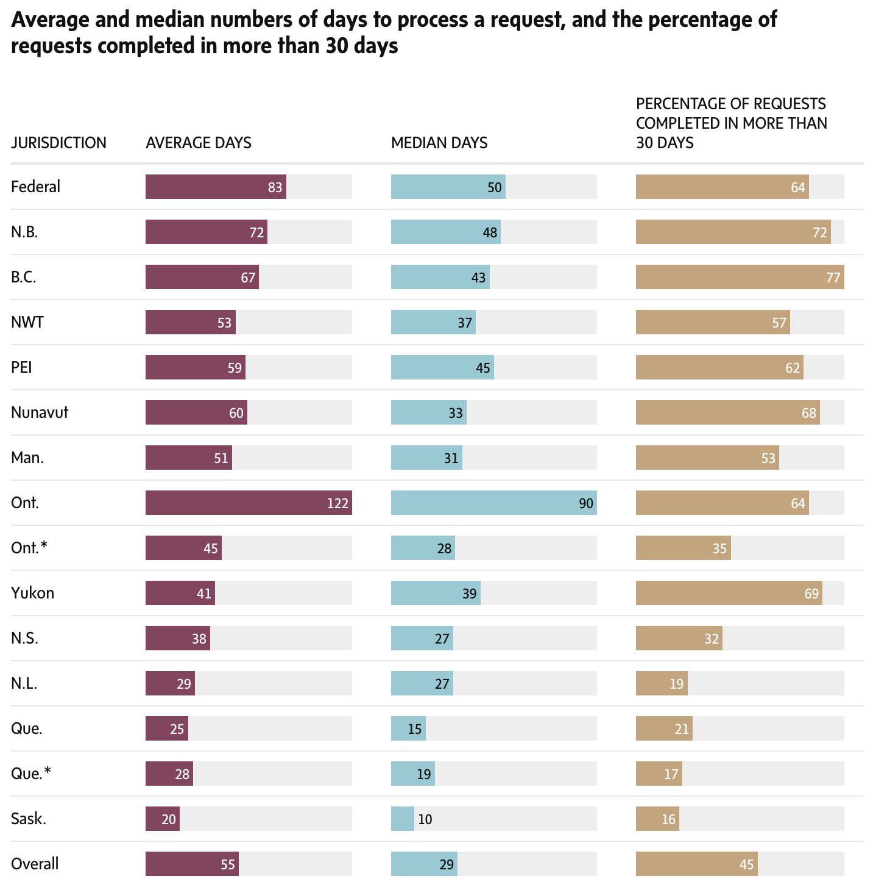

FOI week @ JRN315/JN8402
About me

Tom Cardoso, investigative reporter
at The Globe and Mail (and FOI power user)
Also: I spent the better part of two years investigating the FOI system, a reporting project called Secret Canada.
Today’s agenda
Documents, documents, documents
What good are documents?
Or: Why not just human sources?
Documents are useful because they:
- Are usually attributed to someone.
- Usually have specific dates, carry metadata, etc.
- Are often contemporaneous to the events they’re capturing.
- Give insight into a person or organization’s thinking.
- Often point to new reporting avenues worth pursuing.
- Are often more reliable than human sources.
The document state of mind:
“Developing a document state of mind means constantly wondering what documents are out there and laying the groundwork to get them. Reporters who can start seeing the world this way empower themselves and open a whole new universe of possibilities.”
Note: If you’re curious to learn more, this chapter is useful.
While reporting, always bear in mind: Most things are documented, to some extent.
- Government and regulatory documents (open or via FOI)
- Securities filings for publicly-traded companies
- Corporate filings (incorporation, directors, sometimes ownership)
- Court filings (lawsuits, criminal cases, reviews, court-mandated orders like evictions, etc.)
- Bankruptcy records
- Political donations
- Property records
- Liens (outstanding debts on cars, homes, businesses, etc.)
- Social media
- Website registration information
- Etc.
Q: Okay, but how do you find documents?
A: You’re a document detective. You’ll need to think deductively and inductively.
Deduction
Starting with a hypothesis and testing it through evidence. Top-down.
Example
You receive a tip that a city councillor is accepting gifts in exchange for favourable zoning decisions. To test that theory, you might first collect all decisions that this councillor brought forward or voted on. Then, you might ask: Which companies benefited from those decisions? Then, see if there are connections between the company and the councillor on Facebook, LinkedIn, etc. You could also FOI the councillor’s itinerary, their email correspondence (using the company names as keywords, etc.).
Induction
Starting with observations and arriving at a hypothesis. Bottom-up.
Example
For fun, you have been using a browser extension to scrape GTA Update, a website that lists police and fire calls for service. While analyzing the data, you notice several calls in recent months to a downtown construction site. You wonder if they have a workplace safety problem. You learn the WSIB has a “safety check” service, and find the company has a higher injury rate than some other local companies of similar size. Next, you interview current and former workers, and find out this began when the company was bought out two years ago by a private equity firm, so you pull their corporate filings… And on it goes.
In practice, you won’t use just induction or deduction. You’ll use both and jump back and forth between them on any given story. A hypothesis begets records, which beget observations, which beget new hypotheses, etc.
You don’t need to know everything about what kinds of documents are out there to have a “document state of mind.” You just need to think about what information a person or organization is leaving behind.
To that point, another useful technique:
The “circle of light.”
Exercise:
Thinking deductively and inductively about document trails.
Evictions
Given the national housing shortage, you wonder if more people are getting evicted in Ontario than in past years. After some quick searching, you learn the province doesn’t seem to track evictions.
What next? üëá
Enter the Landlord and Tenant Board, a tribunal which processes housing dispute applications, including for evictions.
What next? üëá
You theorize that they must somehow keep track of the applications they receive. You ask for a copy of their tracking system in an Excel format. They send it to you! The data they sent doesn’t list specific addresses because of privacy concerns… but does have postal codes.
What next? üëá
You speak with a few experts who explain how the eviction process works. To execute an eviction, you need to make a court application. You hypothesize: Evictions must thus be court records. Which means they are public. Which means you can request them!

Freedom of information:
An overview
What is FOI?
A legal mechanism that allows you to make official requests for records held by public bodies.
FOI exists for the sake of transparency, yes, but also out of operational necessity. Sometimes, you might need a government document for something in your own life. This is often the way to get it.
Who’s filing requests?
Federal access request stats (excluding IRCC), 2023-24
Which bodies can you file to?
- Government ministries and agencies
- Crown corporations
- Police forces
- Health authorities
- Universities
- Hospitals
- Transit systems
- Securities commissions
- And more!
What kinds of records can you get?
- Internal reports
- Presentations
- Contracts
- Memos and briefing notes
- Datasets and databases
- Photos, videos, audio
- Emails
- Messages in Slack, Microsoft Teams, etc.
- Text messages
- Really, most kinds of “records”
What kinds of records can’t you get?
- Court files
- Police investigation files, unless they’re about you
- Records that would reveal commercial secrets for the government or a company (e.g. drug pricing)
- Records covered under cabinet confidentiality
- Records covered under solicitor-client privilege
- Records that are already sold in some form (e.g. corporate filings, property reports)
- Patient health records, unless they’re about you
- Personal information of other people
Access law and FOI jurisdictions (Canada, provinces and territories, municipalities, U.S., etc.)
Most countries have some kind of FOI/access law. Many have several!
This is the case in Canada. We have one set of laws per jurisdiction, meaning we have at least one law for each province and territory, plus the federal government. (Some jurisdictions, incl. Ontario, have two laws: One for provincial bodies, and one for municipal bodies.)
The feds split privacy and access into two laws.
For a breakdown, visit this guide to Canada’s FOI jurisdictions.
How does the system work, generally-speaking?
Cost
This varies by jurisdiction. Many places charge a filing fee, often $5. Others charge nothing.
Most jurisdictions may charge additional processing fees before you receive your records.
Some jurisdictions waive fees for journalists, academics, etc. In practice, I find this is almost never worth it in Canada, as the waiver process can take months.
Redactions
- Redactions are supposed to be used sparingly and specifically.
- Instead, they’re often painted with a wide brush.
- There are many types of exemptions, too many to go over individually. You’ll become familiar with them as you file more requests.
Appeals
- If you don’t agree with a redaction, time extension or other decision, you can appeal.
- Every jurisdiction has an appeal mechanism.
- Appeals are almost always free, except for in Ontario, which has a $25 filing fee.
- Most jurisdictions have an information commissioner or ombudsman who can review decisions.
- Some jurisdictions have a tribunal — an FOI court.
- Appeals can take a long time. In Canada, they can easily take several months, if not years.
However… The system is broken.
Aging legislation
Response times aren’t what they should be
Everyone redacts at different rates

And the redactions are frequently unreasonable!
Commissioners are often disregarded

And governments are interpreting FOI law “creatively”
Enter: Secret Canada
Using FOI to investigate FOI.
Secret Canada was an exhaustive examination of Canada’s broken FOI systems, and the culmination of 18 months of investigative work. More than 1,000 FOIs, 200+ interviews and 100+ stories, blog posts and newsletters.
A project in two parts:
- An investigation
- A website
Investigation
Our reporting revealed that public institutions skirt FOI laws by overusing redactions, failing to meet legislated timelines and claiming “no records” exist when they do. And these institutions face few – if any – consequences for ignoring the precedents set by courts and information commissioners.


Some of our stories have looked at:
- Why FOI in Canada is broken, in a general sense
- How the federal ATI has been hijacked by the immigration system
- Canada’s “island of transparency”: the province of Newfoundland
- How other countries’ FOI systems work
- The toothlessness of watchdog bodies responsible for overseeing these laws
- The near-impossibility of accessing historical records via ATIP
- The lack of consequences for those breaking FOI laws
- The state of municipal FOI regimes
Website (secretcanada.com)

- A database of more than 400,000 completed FOI summaries for 600+ federal, provincial, territorial and municipal public bodies
- Educational material, including detailed guides on filing FOIs, navigating the system and appealing decisions
- A blog
Our database was constructed from hundreds of FOIs, filed to every major public body in the country. Ministries, municipalities, police, hospitals, universities, Crown corporations… the list goes on. And we’re currently filing our next round!


I spent a lot of time speaking with FOI experts across Canada. Several general trends jumped out:
- Public bodies have embraced a risk mitigation approach to FOI.
- Access teams are under-resourced almost everywhere.
- Many public bodies don’t give much thought to their duty to assist.
- Redactions are supposed to be used sparingly and specifically. Instead, they’re painted with a wide brush.
- The appeals system has been captured by lawyers and legal thinking. I recently received more than 700 pages of representations for an appeal in B.C. That’s crazy!
Filing your own FOIs
Research before you start, and know your material. Remember: Document state of mind!
The internal FOI process and what to expect
Writing your letter
Exercise: Let’s write an FOI letter together
Navigating the process once you’ve filed
The human touch
Always be filing (AKA “FOI Fridays”)
Staying organized
What about appeals? Provide appeal decision for additional reading, if of interest
Other places to mine for documents
Individual exercise
We are each now going to write (and hopefully file) an access request. We’ll be filing to Newfoundland, since it’s free, pretty fast and you can do it online.